Slide text
Speaker notes / extracted notes
Show slide thumbnails
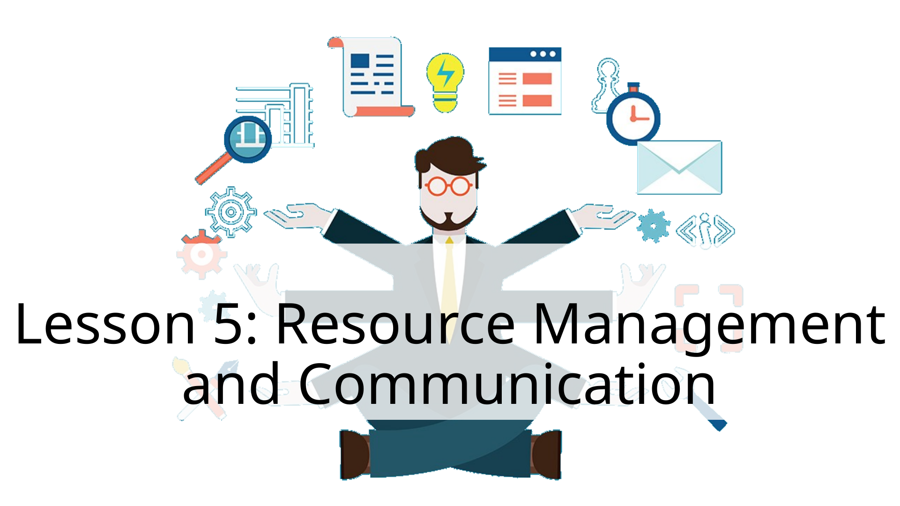
1. Lesson 5: Resource Management and Communicati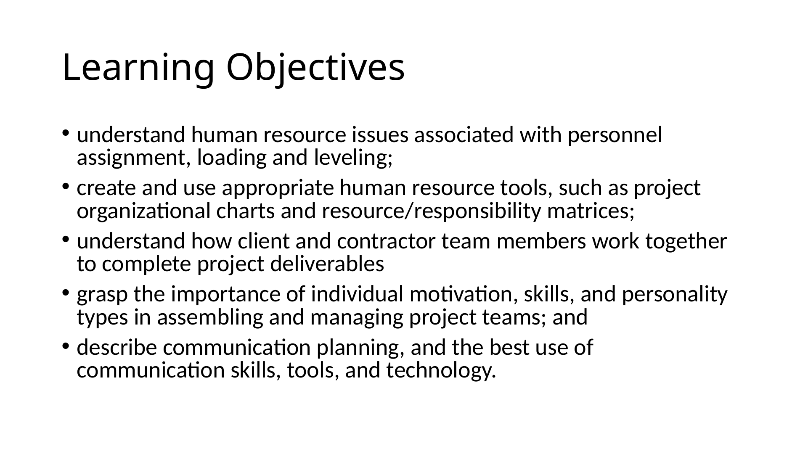
2. Learning Objectives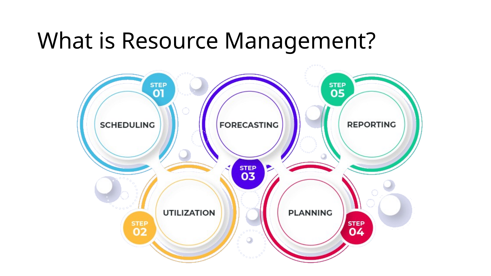
3. Assignment Schedule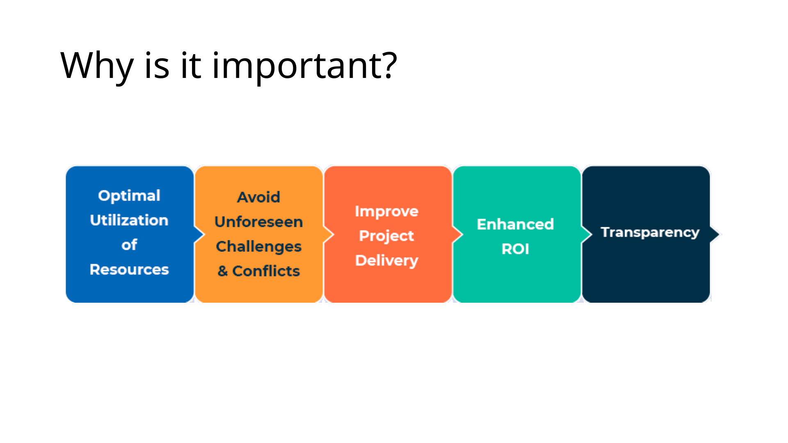
4. What is Resource Management?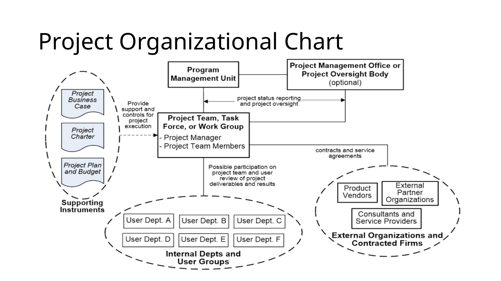
5. Why is it important?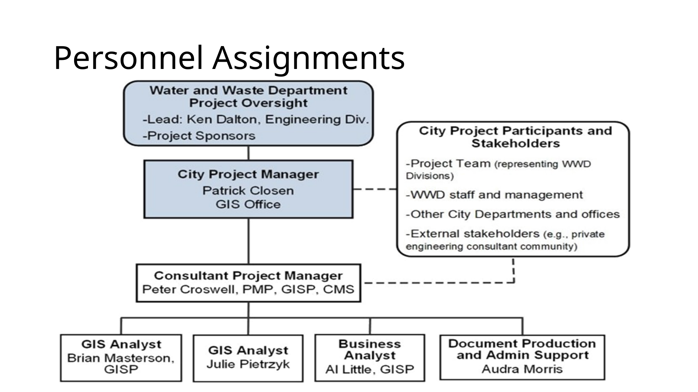
6. Project Organizational Chart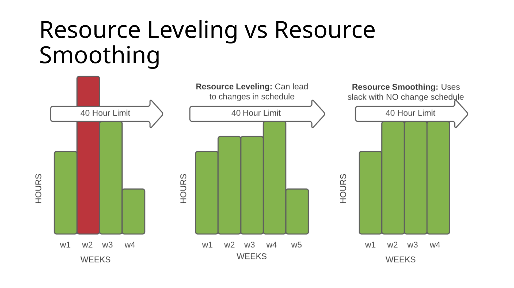
7. Personnel Assignments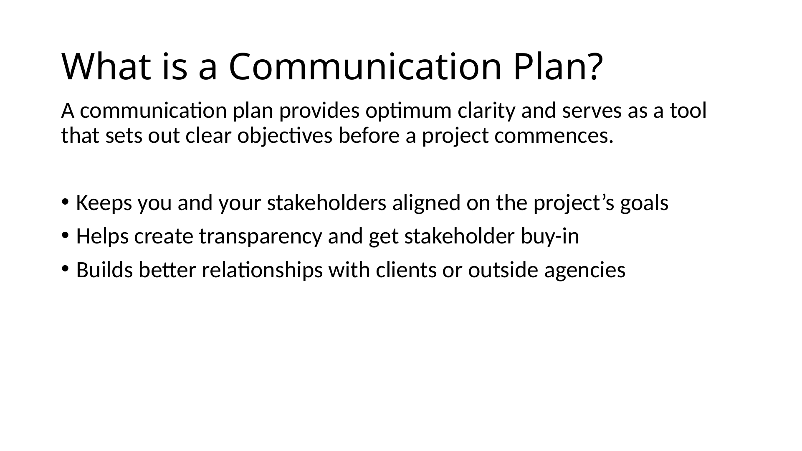
8. Resource Leveling vs Resource Smoothing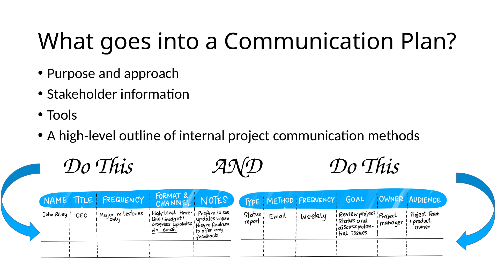
9. What is a Communication Plan?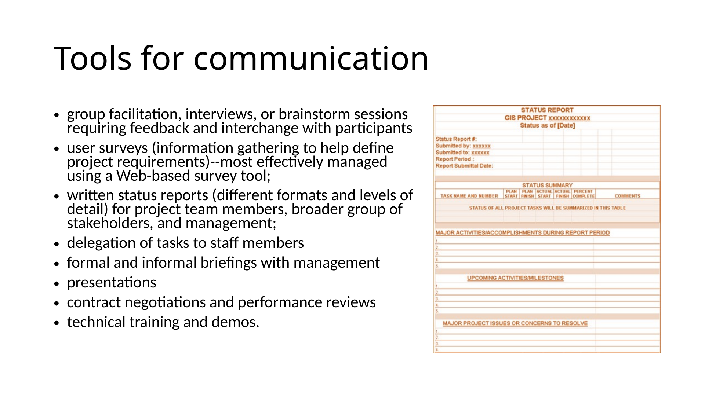
10. What goes into a Communication Plan?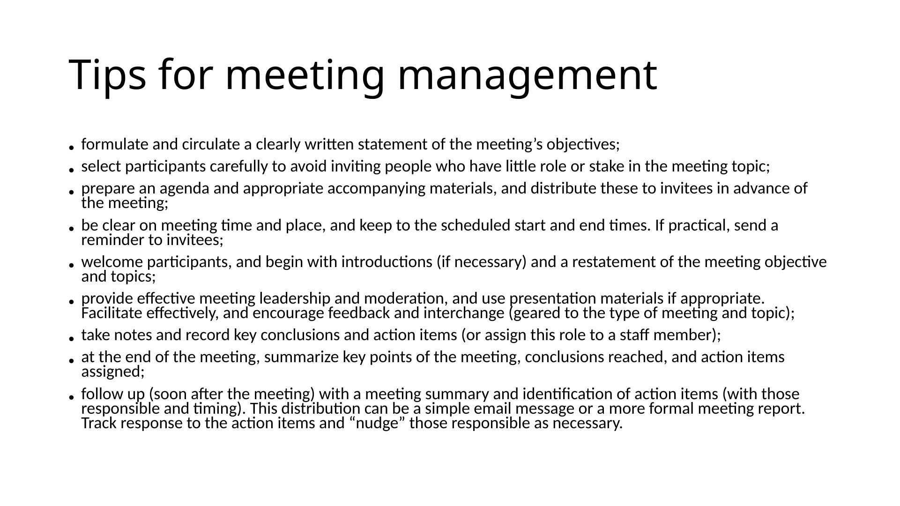
11. Tools for communication